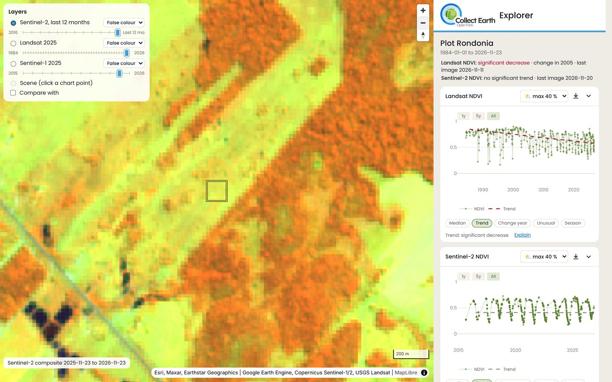
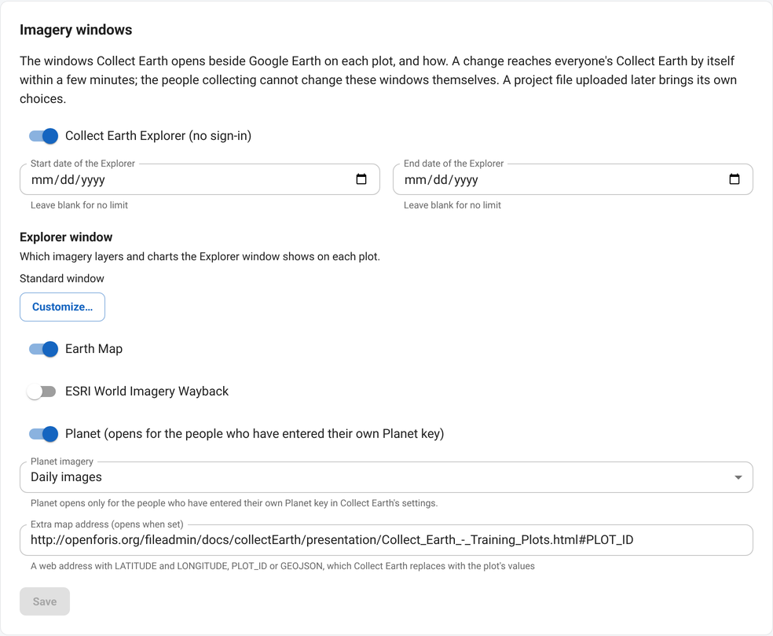
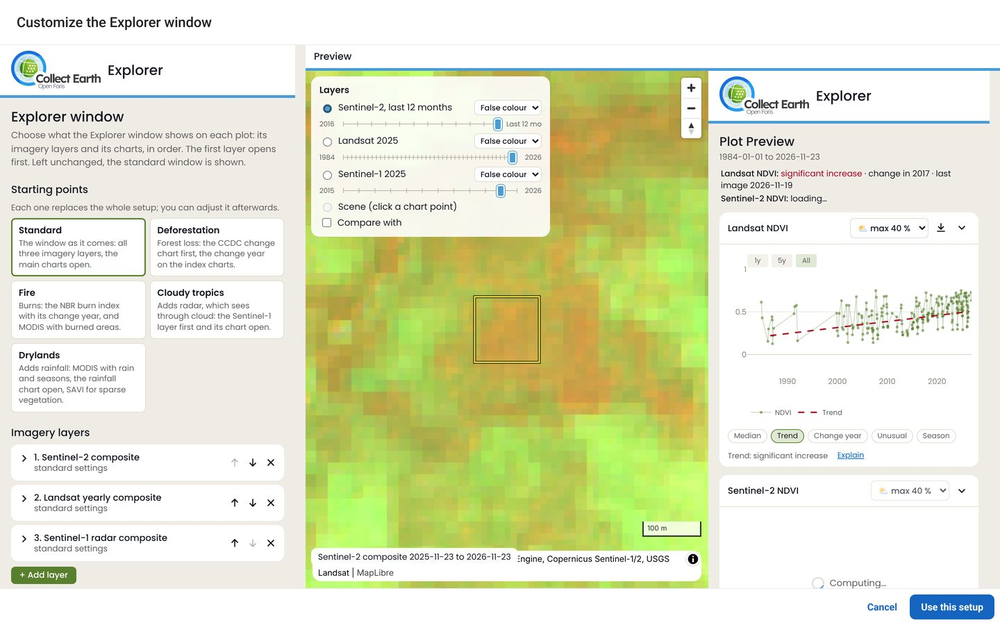
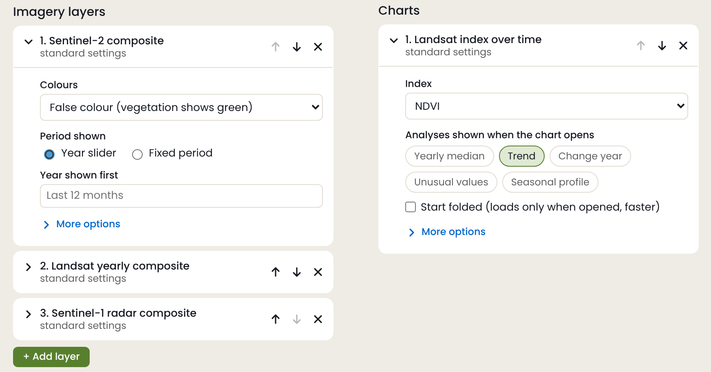
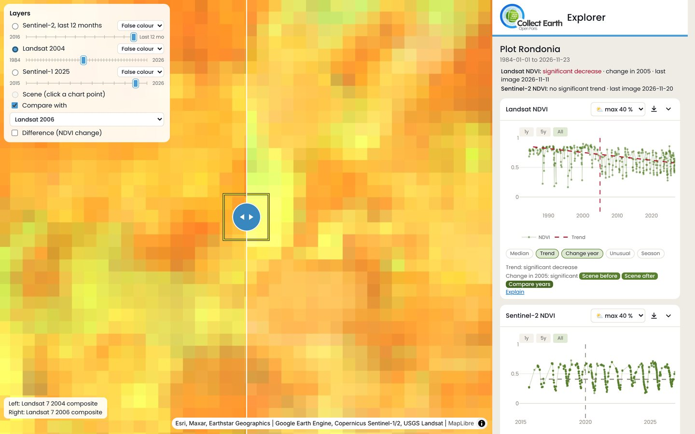
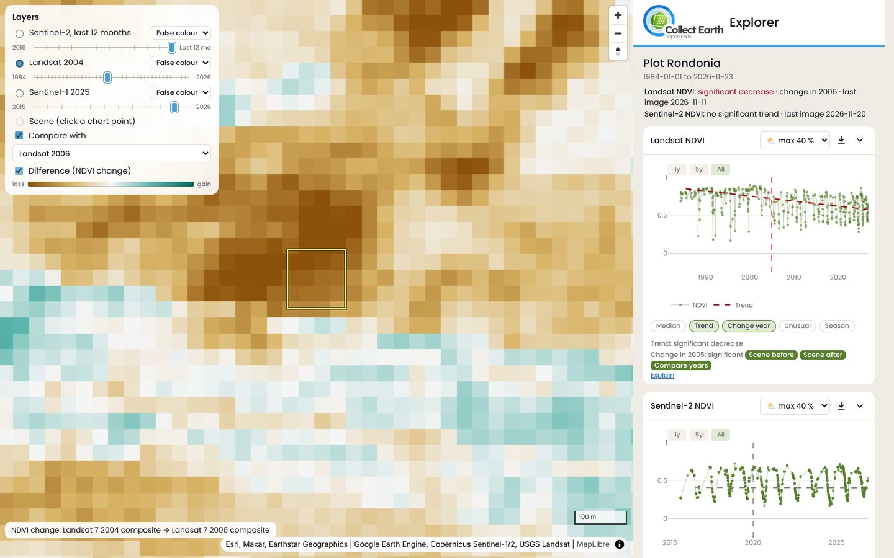
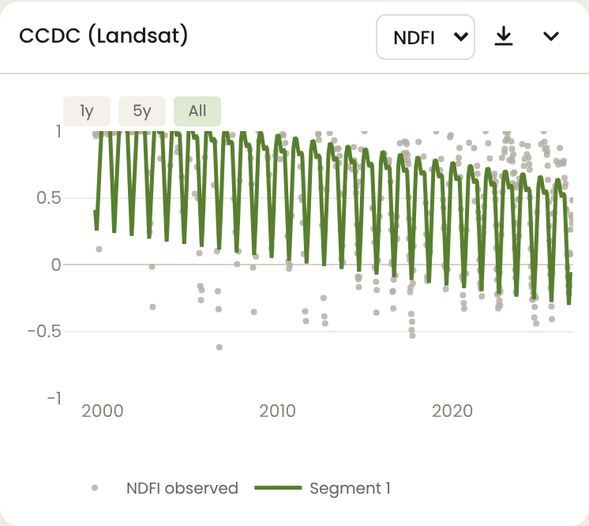
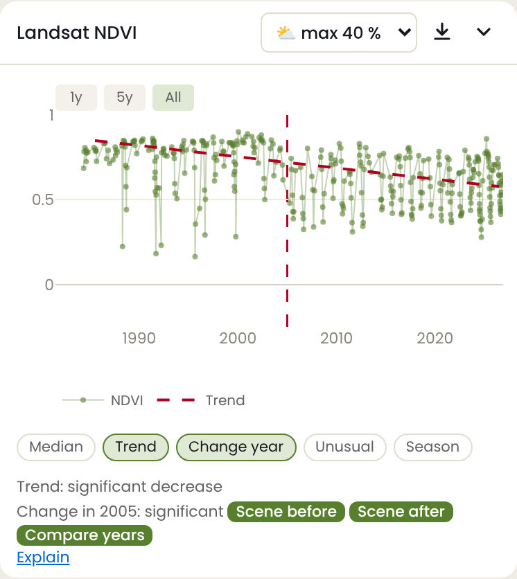
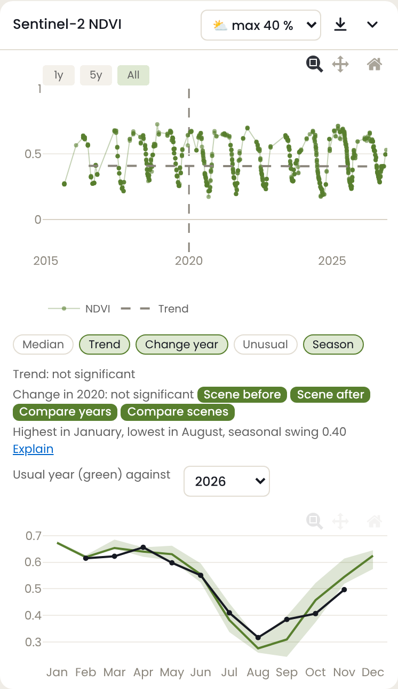
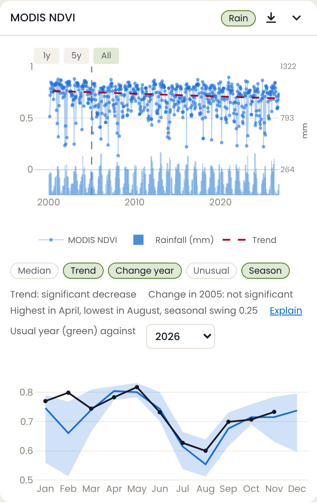

Collect Earth Explorer
Collect Earth Explorer is the window that opens beside each plot with satellite imagery and charts from Google Earth Engine: Landsat back to 1984, Sentinel-2, radar, MODIS and rainfall. This guide shows how to set it up for a survey, how to read its images, and how to use its charts to tell what happened on a plot and when.
1. What it is
- One click per plot. Collect Earth opens the Explorer in its imagery window with the plot drawn on the map; its button is at the top of the panel, and Alt+1…9 brings each imagery source to the front. It needs no account or sign-in: the computations run on Google Earth Engine through the Explorer's server.
- Faster on the next plot. While you work on a plot, the Explorer already loads the next unfinished one: the charts you keep open and the map as you left it.
- It remembers your view. The layer you looked at, its year and colours, a comparison, which charts are folded and which analyses are on stay the same from one plot to the next, on that computer.
- The standard window has three imagery layers (Sentinel-2, Landsat, Sentinel-1 radar) and six charts: a Landsat index, a Sentinel-2 index, CCDC change, MODIS with burned areas, and, folded, Sentinel-1 radar and rainfall. A survey can change all of it (section 2).

2. Setting it up
The Explorer is set up once per project, before training: which period its charts cover, which imagery layers and charts it shows, in what order and with which options. In a cloud project the coordinator does it on the dashboard, and everyone's Collect Earth applies it within minutes; collectors cannot change it. On a project of your own, you do it in Collect Earth's settings. Both open the same editor.
Before you start: four questions
| Question | What it sets |
|---|---|
| Which years does the survey ask about? | The period: start it several years before the earliest reference year, because the trend and the change year need 8 years of data. Landsat's slider can start on the reference year. |
| What change are you looking for? | The starting point and the index: forest loss, fire, crops, drylands (see Choosing an index). |
| Is the area often cloudy? | The radar layer and chart, and the cloud limits. |
| Does a season matter? | A Sentinel-2 layer fixed on that season (a dry or a wet season), so everyone compares the same time of year. |
In a cloud project, step by step

- On the dashboard, open your project's Setup › Plot layout & imagery and scroll to the Imagery windows card.
- Check that Collect Earth Explorer (no sign-in) is on.
- Fill in Start date of the Explorer and End date of the Explorer, or leave them blank: the charts then cover 1984 to today.
- Under Explorer window, press Customize…. The editor opens, with a live preview on one of the project's plots.
- Choose a Starting point (below), then adjust the layers and the charts.
- Watch the Preview: it shows the window as the collectors will see it, about a second after each change.
- Press Use this setup. The card now sums up the setup (for example “4 layers, 5 charts”) and says it is not saved yet.
- Press Save at the bottom of the card. Within a few minutes, every collector's Collect Earth applies it by itself and says what changed.
- Open a plot in your own Collect Earth to check the result. To undo everything, Back to the standard window, then Save.

On a project on one computer
- In Collect Earth, open Settings › Imagery.
- Check Collect Earth Explorer (no sign-in) (on by default), and set Start date in Collect Earth Explorer and End date in Collect Earth Explorer if needed.
- Under Explorer window: layers and charts, press Customize…: the same editor opens, with a preview on a sample plot (a forest edge in Rondônia, Brazil). Press Use this setup, then save the settings.
In a cloud project these settings show Set by the project coordinator on the dashboard and cannot be changed. Under Advanced, the setup appears as a short text: copy it to give another project the same window.
Starting points
Each starting point replaces the whole setup; adjust it afterwards. Undo brings back what you had.
| Starting point | What it gives | For |
|---|---|---|
| Standard | All three imagery layers, the main charts open | Most surveys |
| Deforestation | The CCDC change chart first, the change year on the index charts | Forest loss and its year |
| Fire | The NBR burn index with its change year, and MODIS with burned areas | Burns and recovery |
| Cloudy tropics | The Sentinel-1 radar layer first and its chart open | Places where clouds hide most optical images |
| Drylands | MODIS with rain and seasons, the rainfall chart open, SAVI for sparse vegetation | Savannas, rangelands, drought years |
The layers and their options
The layers are the images on the map, listed in the order of the Layers panel; the first opens first, and the map needs at least one. Add layer adds one; the arrows move it; the cross removes it. A layer can be added twice with different options, for example Sentinel-2 in the dry and in the wet season. Click a layer to open its options:

| Option | Layers | What it does |
|---|---|---|
| Colours | All | False colour (near infrared, shortwave infrared and red: see reading the colours) or true colour; for radar, the false-colour mix of VV and VH, or VV or VH alone |
| Period shown | Sentinel-2 | Year slider, a year at a time, ending with the last 12 months; or Fixed period, From and To, at most 3 years |
| Year shown first | All with a slider | The year the slider starts on: the reference year, for example; left on Automatic, the most recent |
| Name in the layers panel | All (More options) | A name people recognise, such as “Dry season 2019”; without one, a fixed period is named by its dates |
| Years on the slider | All with a slider (More options) | The first and last year people can choose: Landsat from 1984, Sentinel-1 from 2015, Sentinel-2 from 2016 |
| Most cloud cover allowed (%) | Sentinel-2, Landsat (More options) | Leaves out cloudier images from the composite; lower it for a cleaner picture, raise it where images are few |
The charts and their options
The charts are listed in the order they appear beside the map. Add chart adds one; a type can be added twice, for example a Landsat NDVI chart and a Landsat NBR chart. With no charts at all, the window shows only the map.
| Option | Charts | What it does |
|---|---|---|
| Index | Landsat, Sentinel-2, HLS, MODIS, CCDC | What the chart follows: NDVI by default (see Choosing an index); MODIS NDVI or EVI; CCDC NDFI or NDVI |
| Custom formula… | Landsat, Sentinel-2, HLS | Your own index, with its Name of your formula. Bands blue green red nir swir1 swir2, and on Sentinel-2 rededge1 rededge2 rededge3, as reflectance from 0 to 1; numbers, + - * /, brackets, sqrt abs min max pow. Example: (nir - rededge1) / (nir + rededge1) |
| Analyses shown when the chart opens | Landsat, Sentinel-2, HLS, MODIS, radar, rainfall | Which of Yearly median, Trend, Change year, Unusual values and Seasonal profile are on at first (section 5). People can still switch them |
| Index (radar) | Sentinel-1 | VH (more from vegetation, the default) or VV (more from the ground) |
| Show rainfall under the chart | MODIS | Monthly rainfall drawn as bars under the index |
| Start folded | All | The chart loads only when someone opens it: the window is faster. Fold the charts people need only now and then |
| Most cloud cover allowed | Landsat, Sentinel-2, HLS (More options) | The scene cloud limit the chart starts with (40 % by default) |
Examples
- A survey of forest change since 2000: period from 1995; Deforestation starting point; the Landsat layer's Year shown first 2000.
- A dry-season comparison: add a second Sentinel-2 layer with a Fixed period on the dry months of one year, named “Dry season 2019”.
- Fires in a savanna: Fire starting point; add Seasonal profile to the MODIS chart's analyses to tell the burning season from the growing season.
- A faster window for a big Mapathon: keep the charts people use on every plot open, and Start folded the others.
Limits. A setup is saved as a short text of at most 2,000 characters; the editor counts it and says when an item must go. Fields in red must be fixed before the preview and the save work. If the window later shows This survey's Explorer settings were partly ignored, an item was skipped: open the editor and correct it.
3. The map and its layers
Each layer is a composite: the median of the images of a year (or of the period chosen), with clouds masked, so a single cloudy or hazy day does not show.
| Layer | What it shows | Years | Use it for |
|---|---|---|---|
| Sentinel-2 | 10 m, the median of a year's images or of a fixed period; the slider ends with the last 12 months | From 2016 | The plot today and in recent years: field edges, small clearings, tracks; one season, with a fixed period; the newest state when very high resolution imagery is old |
| Landsat | 30 m, the median of every Landsat satellite flying that year | From 1984 | The past: the plot in the survey's reference year and before Sentinel-2 or very high resolution imagery existed; large changes over decades |
| Sentinel-1 radar | 10 m, the year's median radar signal, VV and VH; it sees through clouds and at night | From 2015 | Places where clouds hide most optical images: forest against open land, clearings, flooded ground. It shows the surface's structure and wetness, not its colour |
- The Layers panel lists the survey's layers. Each has its colours and a year slider: slide it to see the plot in another year. A Sentinel-2 slider ends with Last 12 months. The label at the bottom left names the image shown.
- Reading the colours. True colour looks as the eye sees it. False colour shows near infrared as red, shortwave infrared as green and red as blue: dense forest appears orange to red-brown, grassland, pasture and crops yellow to yellow-green, bare soil and built-up land pale green to cyan, water dark blue to black. It tells vegetation types apart better than true colour.
- Radar. VV is bright on buildings and rough ground, VH on forest and dense vegetation; the false-colour mix shows both.
- Compare. Compare with splits the map with a handle you drag: the layer ticked above on the Left, the one you choose on the Right, each at its own year. Compare years on a chart does it for you around a change year.
- Difference. While comparing two images of the same sensor, Difference (NDVI change) replaces the split with one map of the change in vegetation, right minus left, from loss (brown) to gain (blue-green). It is not available for radar.
- A scene. Click a point in a Landsat or Sentinel-2 chart, or Scene before and Scene after beside a change year: the map shows that single image (Scene). Use it to see what lies behind an odd value: a cloud, a fire scar, a harvested field.
- Redraw the plot. Redraw polygon: click the corners of another shape, or one place for a point, then Done. Every chart is computed again for that shape. Use it to look at only one part of a mixed plot, or at a patch beside it. It changes nothing in Collect Earth or in the survey's data; Original plot brings the plot back. A shape can cover at most 100 ha and 0.1° across; it is not available while comparing.


4. The charts
Each chart follows the plot over time. A line above the charts sums up each Landsat, Sentinel-2 and HLS chart: its trend, a significant change year, and the date of the last image; click a line to go to its chart.
| Chart | What each point is | Use it for |
|---|---|---|
| Landsat index over time | The plot's mean index on one Landsat image, since 1984, clouds masked | The long history; dating changes before 2016 |
| Sentinel-2 index over time | The same on Sentinel-2, since 2016, in more detail (10 m) | Recent changes; small plots; the seasonal cycle |
| Landsat and Sentinel-2 (HLS) index over time | The same on NASA's Harmonized Landsat Sentinel-2: Landsat 8 and 9 and Sentinel-2 made into one consistent series at 30 m, an image every 2 to 3 days since 2015 (Landsat only from 2013) | Cloudy places, where more images means more clear ones; dating a recent change to the month. Not in the standard window: add it in the editor |
| Change over time (CCDC segmentation) | Every Landsat 7, 8 and 9 image, with lines fitted between breaks (Segment 1, 2…) | When the land changed, found without choosing dates; NDFI for forest, or NDVI |
| MODIS 16-day index and burned area | NDVI or EVI every 16 days since 2000 at 250 m, burned months marked; Rain adds monthly rainfall under it | Fires; the seasons of the area; droughts |
| Sentinel-1 radar signal over time | The radar backscatter in dB at each pass, VH or VV, since 2015 | Changes under persistent cloud |
| Monthly rainfall | Rainfall in mm per month (ERA5-Land, about 11 km: the area's, not the plot's) | Telling a dry year from a land use change |
On every chart: 1y, 5y and All set the time shown; drag to zoom, Reset axes to go back; Fold chart hides it; Download CSV gives its values. On Landsat and Sentinel-2 charts the cloud filter (Any cloud, max 40 %…) leaves out images from cloudy scenes; the limit is for the whole satellite scene, and cloudy pixels over the plot are masked anyway.

5. Reading the analyses
The Landsat, Sentinel-2, HLS, MODIS and Sentinel-1 charts carry five analyses, each with a switch. Explain describes them on the chart. Your choice of switches applies to all charts and stays for the next plots.
| Analysis | What it shows | How to read it |
|---|---|---|
| Yearly median | The middle value of each calendar year (years with images in fewer than 6 months are left out) | The year-to-year level, without the noise of single images |
| Trend (on when the chart opens) | Whether the yearly medians rise or fall, with the change per year. Needs 8 years | Trend: significant increase or decrease when its p-value is below 0.05, the chance of seeing it if there were no real trend: regrowth, or slow degradation. not significant: stable, or too noisy to tell |
| Change year | The year where the yearly medians shift most, with the median before and after. Needs 8 years | Change in 2011: significant marks a likely event. Confirm it with Compare years (the composites of the year before and after) or, on Sentinel-2, Compare scenes (the least cloudy scene of the 3 months before and after); Scene before and Scene after show one image each |
| Unusual values | Observations far below what is usual for their month, in red. Needs 24 observations | A single red point is often cloud or shadow the mask missed; a run of red points is a real drop: a clearing, a fire, a flood |
| Seasonal profile | The usual value of each month (line) and the range of half the observations (band), with one year drawn over it (Usual year against a year you pick) | Highest in and lowest in a month, and the seasonal swing: a strong, regular swing is crops or deciduous vegetation; a flat, high line is evergreen forest. A year that leaves the band behaved unusually |



- Trend and change year together. A gradual trend also produces a change year. A sharp step with no trend after it is an event; a steady slope with a change year in the middle is a slow process.
- A drop that comes back within a year or two to the same seasonal pattern is a disturbance (a harvest, a fire, a dry year), not a change of land use.
- CCDC: each segment is a stable period with its own level and seasons; a break between segments is a change. A short segment between two similar ones is often a disturbance and recovery.
- MODIS burned areas mark the months the area burned (MCD64A1, 500 m): useful to explain a drop, too coarse to say the plot itself burned.
- Radar backscatter falls when trees are cleared (VH especially), but is also affected by soil moisture after rain: read it with the rainfall.
6. Choosing an index
NDVI suits most surveys. Choose another when the question needs it.
| Index | Formula | Rises with | Use it for |
|---|---|---|---|
| NDVI | (nir-red)/(nir+red) | Green vegetation | The default: forest, crops, vegetation loss and gain |
| EVI, EVI2 | NIR, red (and blue) | Green vegetation, without saturating as fast | Dense forest, where NDVI stays near its top |
| SAVI, MSAVI | NIR, red, with a soil term | Vegetation over bright soil | Drylands, sparse trees and shrubs |
| GNDVI | (nir-green)/(nir+green) | Chlorophyll | Crop vigour |
| NDMI | (nir-swir1)/(nir+swir1) | Water in the leaves | Selective logging, degradation, drought stress |
| NBR, NBR2 | (nir-swir2)/(nir+swir2), (swir1-swir2)/(swir1+swir2) | Unburned vegetation | Fires and recovery after them |
| NDWI, MNDWI | (green-nir)/(green+nir), (green-swir1)/(green+swir1) | Open water | Wetlands, flooding, reservoirs |
| NDBI | (swir1-nir)/(swir1+nir) | Built-up surfaces | Settlements, roads |
| BSI | SWIR, red, NIR and blue | Bare soil | Cleared land, mining, erosion |
| NDSI | (green-swir1)/(green+swir1) | Snow | Mountains, to tell snow from bare ground |
| NDFI (CCDC only) | From the fractions of green vegetation, dry vegetation, soil and shade in each pixel | Intact forest canopy | Forest degradation and loss in the tropics |
7. What to use for which question
| Question | Look at |
|---|---|
| Was the forest cleared, and when? | CCDC (NDFI) for the break; Landsat NDVI with Change year and Compare years; the Landsat layer compared left and right, with Difference |
| Is the forest degraded, not cleared? | NDMI or NDFI: a lasting Trend down, or a shallow step, with the canopy still closed on VHR |
| Did it burn? | MODIS burned months; NBR with Change year; the scene after the fire for the scar; recovery in the years after |
| Is it cropland? | Sentinel-2 NDVI with Seasonal profile: one or two strong peaks a year, bare between them |
| Did trees grow back, or were they planted? | Trend: significant increase; CCDC's last segment rising; rows of young trees on VHR |
| Was it only a dry year? | Monthly rainfall, or Rain under MODIS; whether the index recovers the next year |
| Clouds hide everything | The Sentinel-1 layer and chart; the HLS chart, with an image every 2 to 3 days; the Cloudy tropics starting point |
| The plot holds two kinds of land, or a change happened beside it | Redraw polygon around one part, or the patch beside it, and read the charts for that shape alone |
| Water, wetland or flooding? | MNDWI; the Sentinel-2 layer in false colour |
The Explorer dates a change; very high resolution imagery shows what the land is. Use both: see Reading land use change.
8. When something goes wrong
| You see | What to do |
|---|---|
| Computing… for a long time | The first time anyone opens a plot, CCDC and the long series take longest; the results are kept, so the plot opens quickly afterwards, and the next plot is loaded while you work. Fold the charts you do not need |
| Earth Engine is busy. Try again in a moment. | The Explorer retries by itself; then press Retry |
| No images for this plot and period. | The period or the cloud limit leaves nothing: widen the period, or raise Most cloud cover allowed |
| Trend needs 8 years of data | The period is too short, or the cloud filter leaves too few years: start the period earlier, or loosen the filter |
| This survey's Explorer settings were partly ignored | An item of the setup is not understood and was skipped; the coordinator corrects it in the editor |
| The plot is refused | The Explorer takes plots of up to 100 ha and 0.1° across |
| Nothing opens | Check that Collect Earth Explorer is on in the settings and that the computer is online |